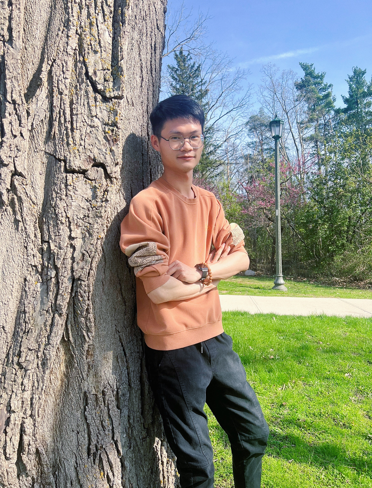

Chengqian Xian
PhD candidate in Statistics
Department of Statistical and Actuarial Sciences, Western University, London, Ontario, Canada
cxian3@uwo.ca
Home
Education
Publications
Teaching
Achievements
Chengqian is a Ph.D. candidate in Statistics at the University of Western Ontario (UWO). He received his B.Sc. in Mathematics and Applied Mathematics (Statistics) and B.A. in English at the South China University of Technology in 2019. He came to UWO and studied Statistics as a visiting student in 2018, after which he received an M.Sc. in Statistics at UWO in 2020. His research interests focus on Bayesian variational inference, mixture models, survival analysis, functional data clustering, and intensive care unit (ICU) data analysis.